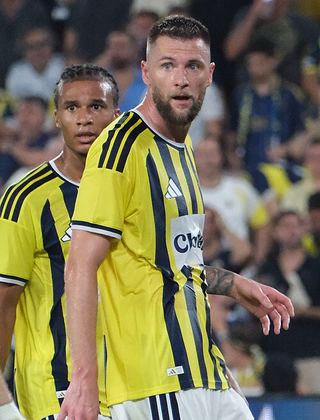

Ezzcoins › Player pages › Milan Škriniar
81
CB

Škriniar
PAC54
SHO52
PAS60
DRI65
DEF83
PHY82
Photo (cropped): User:Zafer · CC BY-SA 4.0 · Wikimedia Commons
Photo source
https://commons.wikimedia.org/wiki/File:Milan_%C5%A0kriniar_37_Fenerbah%C3%A7e_20260805_(8)_(cropped).JPG
Licence: https://creativecommons.org/licenses/by-sa/4.0
Milan Škriniar
81 CB · Fenerbahçe · Trendyol Süper Lig ·  Slovakia
Slovakia
No console price yet. Add this player to your watchlist on Ezzcoins: the most-watched players get a price every hour.
75Meta rating · CB −6 vs overall
PAC54
SHO52
PAS60
DRI65
DEF83
PHY82
Chemistry style
Turn on JavaScript to see this card with each chemistry style.
- Position
- CB
- Club
- Fenerbahçe
- League
- Trendyol Süper Lig
- Nation
- Slovakia
- Skill moves
- 2★
- Weak foot
- 2★
- Preferred foot
- Right
Meta rating: Ezzcoins' own estimate of how well this card plays in game, worked out from its stats for each position it can play, its skill moves, weak foot and PlayStyle+. An average card scores about its overall rating; higher means it plays above its rating.
Watch on EzzcoinsMore from Fenerbahçe
- 83
 Mason GreenwoodRM
Mason GreenwoodRM - 83
 N'Golo KantéCDM
N'Golo KantéCDM - 82
 EdersonGK
EdersonGK - 82
 Marco AsensioCAM
Marco AsensioCAM - 82
 Romelu LukakuST
Romelu LukakuST - 81Anderson TaliscaCAM
- 81Mattéo GuendouziCDM
- 81
 Vedat MuriqiST
Vedat MuriqiST